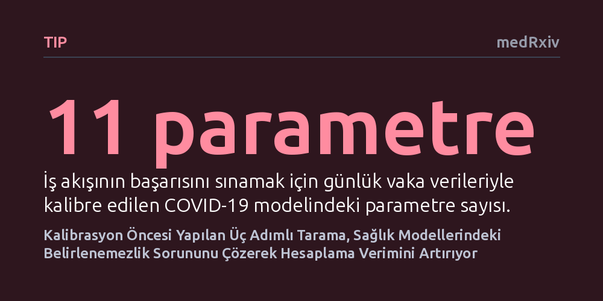

TIP · medRxiv · 2026-10-12
Araştırmacılar, karmaşık sağlık ve salgın modellerinin kalibrasyonunu kolaylaştırmak amacıyla kalibrasyon öncesi çalışan PRE-CISE analiz iş akışını geliştirdi. Yöntemin, parametre sınırlarını düzelterek belirlenemezlik sorununu çözdüğü ve karmaşık modellerde kalibrasyon verimliliğini artırdığı gösterildi.
Sağlık politikalarını yönlendiren karmaşık simülasyonların günlerce süren körlemesine hesaplamalar yerine ön taramayla çok daha güvenilir ve hızlı kalibre edilebileceğini gösteriyor.

Salgın hastalıkların yayılımını öngörmek ve kamu sağlığı politikalarının etkinliğini değerlendirmek için matematiksel simülasyonlardan yoğun şekilde yararlanıyoruz. Ancak bu modellerin güvenilir sonuçlar üretebilmesi için gerçek dünya verileriyle uyumlu hale getirilmesi, yani kalibrasyon süreci gerekir. Çok sayıda bilinmeyen parametre içeren karmaşık modellerde, hangi parametrenin sonucu ne yönde değiştirdiğini ve eldeki gözlemsel verilerin bu parametreleri gerçekten ayırt etmeye yetip yetmeyeceğini kestirmek çoğu zaman zordur.
Araştırmacılar genellikle parametrelerin başlangıç aralıklarını geniş tutarak doğrudan yoğun bilgisayar hesaplamalarına girişir. Bu yaklaşım, model çıktılarının gerçek verileri kapsayamamasına veya birbirinin etkisini maskeleyen parametreler yüzünden günlerce süren hesaplama süreçlerinin boşa gitmesine yol açabilir. Kalibrasyonun eksik ya da hatalı yapılması ise nihayetinde salgınla mücadele ve sağlık bütçesi planlaması gibi kritik alanlarda yanlış kararlar alınması riskini doğurur.
Dolayısıyla, modelleri haftalarca sürecek maliyetli hesaplama döngülerine sokmadan önce parametre sınırlarını ve hedef veri noktalarını hızlıca gözden geçirmeyi sağlayacak sistematik ve şeffaf bir ön kontrol sürecine büyük ihtiyaç duyulmaktadır.
Araştırmacılar bu yöntemsel zorluğu aşmak için PRE-CISE adını verdikleri kapsamlı bir kalibrasyon öncesi iş akışı tasarladı. Geliştirilen yaklaşım; kapsama analizi, yerel duyarlılık ölçümü ve eşdoğrusallık tanılarını kalibre etme işlemine başlamadan önce tek bir çatı altında birleştiriyor. Süreç, modelin başlangıç parametre aralıklarıyla üretilen simülasyon çıktılarının gerçek veri hedeflerini yeterince kapsayıp kapsamadığının kontrol edilmesiyle başlıyor.
Ardından devreye giren yerel duyarlılık analizi, her bir parametrenin model çıktıları üzerindeki etkisini sayısal olarak ortaya koyuyor ve böylece kapsama sorununu gidermek için hangi parametre sınırlarının daraltılıp genişletilmesi gerektiğini gösteriyor. Son basamakta ise eşdoğrusallık analizi uygulanarak parametrelerin eldeki verilerle birbirinden bağımsız olarak tespit edilip edilemeyeceği, yani belirlenebilirlik durumu ölçülüyor. Yüksek eşdoğrusallık değerleri, verilerin parametreleri ayırt etmeye yetmediğini gösteren kritik bir uyarı işlevi görüyor.
İş akışı üç farklı simülasyon düzeneğinde Bayesçi kalibrasyon uygulanarak test edildi: Üç parametreli hasta-daha hasta Markov modeli, iki parametreli standart SIR salgın yayılım modeli ve gerçek günlük vaka verileriyle eşleştirilen 11 parametreli COVID-19 simülasyonu.
Yapılan incelemeler, ilk aşamadaki kapsama analizlerinin başlangıçtaki uyumsuzlukları anında yakalayabildiğini gösterdi. Yerel duyarlılık analizi sayesinde, Markov modelinde 'hastadan daha hastaya' geçiş olasılığının çıktılar üzerinde en belirleyici etkiye sahip olduğu saptandı ve bu parametrenin sınırları yeniden boyutlandırılarak kapsama performansı belirgin biçimde artırıldı. Eşdoğrusallık analizleri ise hedeflerin farklı zaman noktalarına yayılmasının üç parametrenin tamamının başarıyla tanımlanabilmesini sağladığını ortaya koydu.
SIR salgın modelinde, özellikle salgının tepe noktasını içine alan veri noktaları sürece dahil edildikçe eşdoğrusallık indeksi hızla geriledi ve belirlenebilirlik eşiğinin altına indi. COVID-19 simülasyonunda ise yerel duyarlılık analizi zaman içinde değişen tespit oranları ile temas azaltma etkilerinin en öncelikli parametreler olduğunu göstererek arama uzayını daralttı.
Çalışmanın en dikkat çekici bulgularından biri veri sıklığının etkisi oldu: Günlük vaka verileri kullanıldığında tüm parametre kombinasyonlarında eşdoğrusallık indeksleri belirlenebilirlik eşiğinin altında kalırken, haftalık veriler kullanıldığında bu indeksler çok daha yüksek çıktı. Bu durum, PRE-CISE iş akışının özellikle yoğun örnekleme gerektiren ve çok parametreli karmaşık modellerde hesaplama verimliliğini somut biçimde artırdığını kanıtladı.
Elde edilen bulgular, modelleyicilerin doğrudan haftalarca süren ağır hesaplama döngülerine girmek yerine kalibrasyon öncesinde sistematik bir ön tarama yapmalarının gerekliliğini ortaya koyuyor. Parametre sınırlarının ve hedef veri sıklığının baştan optimize edilmesi, hem hesaplama kaynaklarının boşa harcanmasını önlüyor hem de tespit edilemeyen parametreler nedeniyle ortaya çıkabilecek yanıltıcı sonuçların önüne geçiyor.
Yazarların belirttiği üzere bu iş akışı, 'araştırmacıların yoğun kalibrasyon öncesinde önsel dağılım sınırlarını ve kalibrasyon hedeflerini iyileştirmelerine yardımcı olan şeffaf bir yol' sunmaktadır. Böylece modellerin belirsizlik aralıkları çok daha dürüst bir şekilde raporlanabiliyor.
Sonuç olarak PRE-CISE, epidemiyoloji ve sağlık ekonomisi alanında politika yapıcılara sunulan simülasyonların matematiksel sağlamlığını ve güvenilirliğini artıran pratik bir rehber niteliği taşıyor.